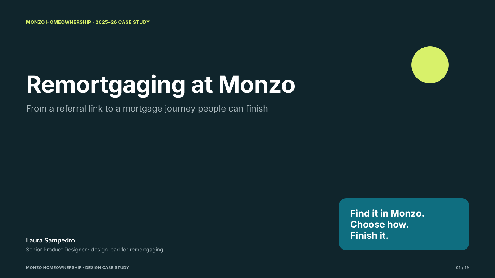

LS
Laura Sampedro
Product design · Case study
MONZO · HOMEOWNERSHIP
01 / 19
▤
Speaker notes
←

→
01
Remortgaging at Monzo, 2025–26
PRESENTER NOTES · DRAFT
Slide 1
×
01 / 19
Use the arrows to change slides